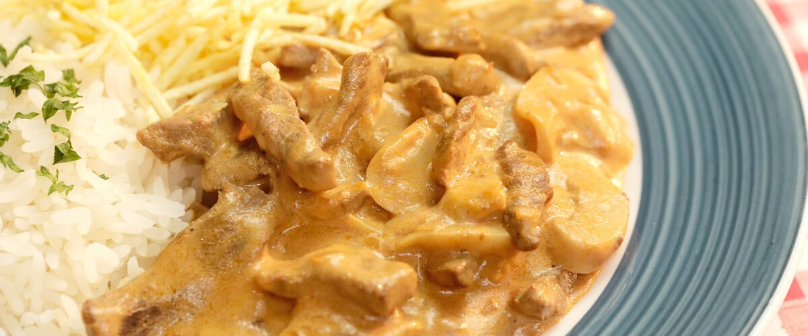
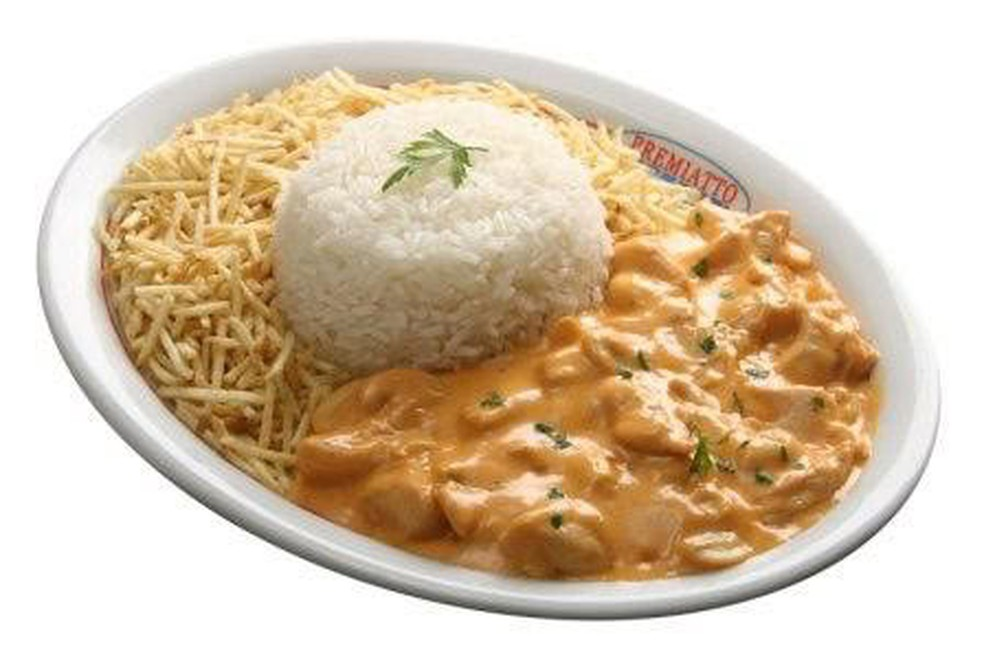

Receita de strogonoff de carne

Ingredientes
500 gramas de alcatra cortada em tirinhas
1/4 xícara (chá) de manteiga
1 unidade de cebola picada
1 colher (sobremesa) de mostarda
1 colher (sopa) de ketchup (ou catchup)
1 unidade de tomate sem pele picado
1 lata de creme de leite
sal a gosto
Modo de preparo
Derreta a manteiga e refogue a cebola até ficar transparente.
Junte a carne e tempere com o sal.
Mexa até a carne dourar de todos os lados.
Acrescente a mostarda, o catchup, a pimenta-do-reino e o tomate picado.
Cozinhe até formar um molho espesso.
Se necessário, adicione água quente aos poucos.
Quando o molho estiver encorpado e a carne macia, adicione os cogumelos e o creme de leite.
Mexa por 1 minuto e retire do fogo.
Sirva imediatamente, acompanhado de arroz e batata palha.
Dica: Se juntar água ao refogar a carne, frite-a até todo o líquido evaporar.
